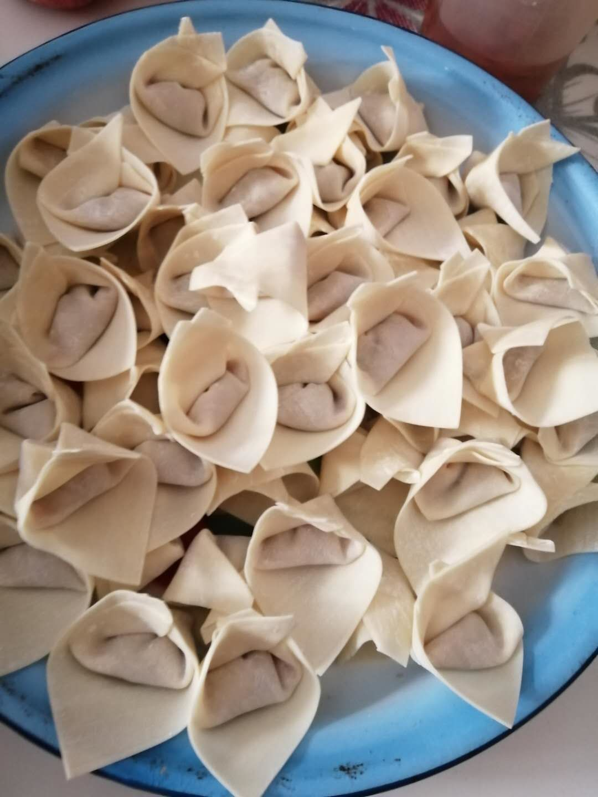
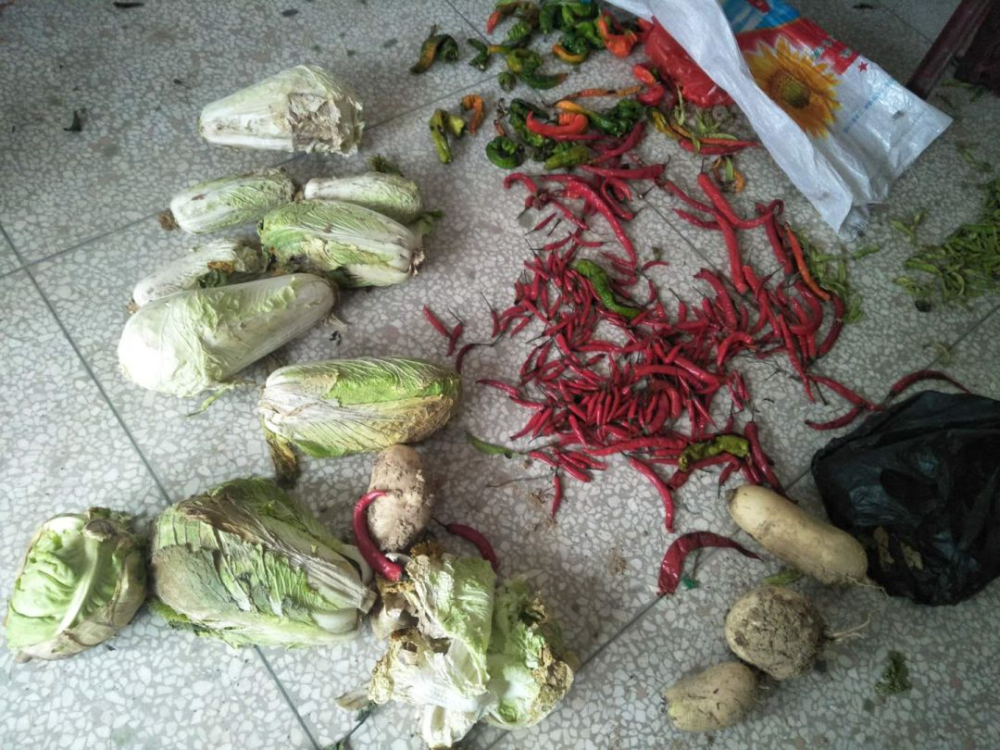
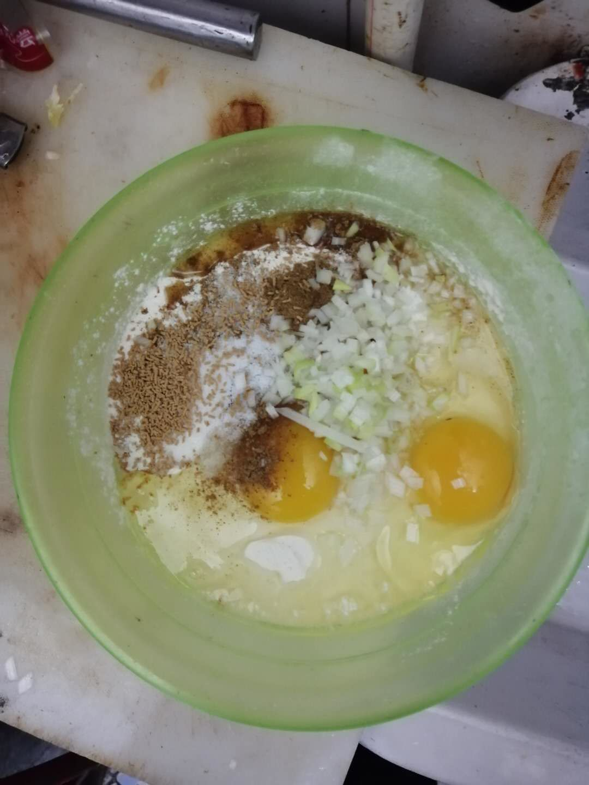

复工缓慢需求疲软，苹果华为三星受疫情冲击几何？
原文链接 备份链接 全球70%的智能手机都在中国生产制造 隔离限制致工厂开工延误、劳动力供应短缺“虽然部分手机生产线已转移到越南、印度等国，但供应系统一直在中国。供应系统比组装线更有价值，要珍惜来之不易的供应链，尽快恢复，保持优势。” …
EDITOR’S NOTE
编者按
2019年开始，面向农民工子女的实务学堂，和面向女工的木兰花开，在“银杏伙伴合作基金”的支持下，合作组织了女工写作班，上周推出了“女工笔下的疫情”系列文章。最近，又收到了很多工友的图片和居家生活故事。
我们整理一部分，刊发出来，欢迎大家阅读，也欢迎大家打赏（打赏会转给作者）。你们的鼓励非常重要。谢谢大家！
“女工笔下的疫情”也还会继续整理推出，敬请期待。
图文：何文琼。今年年底47岁，四川省遂宁人。在北京二十一年了，做家政有十七八年。

2020年2月28号星期五，是阳光明媚的一天。好多天没有出小区的铁栏杆大门，今天下午太阳️ 特别大，和小叔子家的丫头出去买鱼，晚上吃“老东西”（指作者的丈夫）做青花椒水煮鱼。路过油菜花地，花儿开的特别鲜艳，突然看见有一只蜜蜂在忙着采蜜，急忙从兜掏出手机，“咔嚓”地拍下那一瞬间，急忙分享给我的（木兰）姐妹们
特别大，和小叔子家的丫头出去买鱼，晚上吃“老东西”（指作者的丈夫）做青花椒水煮鱼。路过油菜花地，花儿开的特别鲜艳，突然看见有一只蜜蜂在忙着采蜜，急忙从兜掏出手机，“咔嚓”地拍下那一瞬间，急忙分享给我的（木兰）姐妹们 ，哈哈还把“油菜花”的“油”发错了，高兴，激动！
，哈哈还把“油菜花”的“油”发错了，高兴，激动！

2020年2月27号星期四， 阴天。儿子想吃馄饨，我就买了新鲜肉，回来就自己用菜刀砍成肉馅。“小少爷”不会包，“老东西”、“老娘们”、“大少爷”，我们三人一起包，包了一百五十多个，都吃光光了
阴天。儿子想吃馄饨，我就买了新鲜肉，回来就自己用菜刀砍成肉馅。“小少爷”不会包，“老东西”、“老娘们”、“大少爷”，我们三人一起包，包了一百五十多个，都吃光光了 特别香，我家是不是饭桶呀
特别香，我家是不是饭桶呀

2020年2月26号的早上，我家“老东西”起来把稀粥煮好，我还在被窝里，他就走到卧室床边说：“今天我想吃你做的饼。”我说没问题，立马起床洗手，弄面粉，切了三尖椒丁放里，加了花椒面、盐、两鸡蛋一起搅拌。铁锅烧热，加油，再用勺子，一个一个往锅里放；小火慢煎，再用锅铲一按，煎的两面金黄。一个字，“香”！三个字，“特别香”！
图文：黄银菊，湖南益阳人。在东莞打工、开店20余年。两年前到北京，是实务学堂厨师。

过完年，因为受“疫情”的影响蜗居在家，自己平常一直没在家没种菜，也不能出去买菜。经常亲朋好友和邻居给我送菜呀，送好吃的呀
 。有时候送上门口的菜几堆，连是谁送的都不知道。所以呀心里总是在想，人家经常给我送这送那，总感觉不安，总觉得欠人家不少。
。有时候送上门口的菜几堆，连是谁送的都不知道。所以呀心里总是在想，人家经常给我送这送那，总感觉不安，总觉得欠人家不少。


和孩子们生活多年在北方，儿子是喜欢吃肉包，女儿喜欢吃花卷，也可能俩姐弟有了北方的生活习惯了吧！经常对面食会产生思念啦。反正在家无聊，现在“疫情”稍微好一点了。跑到超市买了一袋面粉。晚上把面发好，第二天早上一大早起床看到醒发的如棉花似的面团 心里面暖暖的。又把堂弟妹叫过来，教她怎么做，做完之后，用柴火蒸的。
心里面暖暖的。又把堂弟妹叫过来，教她怎么做，做完之后，用柴火蒸的。 哇！好美好漂亮。
哇！好美好漂亮。 好好吃的馒头，包子，花卷。
好好吃的馒头，包子，花卷。

后来趁热把包子给村子的人，家家户户都送上给他们吃。也表示他们对于我的爱表示歉意……因为菜经常吃不完。还烂掉很多还舍不得扔掉。又加上人家给我送的太多真吃不完，看到人家这么热心的对待，又不好意思拒绝，真是太可惜了 ！菜烂了晚上偷偷丢掉好多，太可惜了，太不忍心……
！菜烂了晚上偷偷丢掉好多，太可惜了，太不忍心……
图文：韩金龙，安徽省灵璧县人，今年四十岁，职业是早点师。

回北京已经一个多月了，从刚开始的观望等待，经历了无聊抓狂，现在，已经可以规律面对蜗居的生活。我本来是做厨师的，所以，就是想着法子做吃的。
先是把在家里放了一年多的生葵花籽翻出来，小火翻炒了近一个小时。在看电影的时候，手里不闲着，把生花生去皮，水煮五香花生米做了，油炸花生米也做了，后来，把花生炸完、挂上糖霜、撒上芝麻的，也做了。
跟花生较完劲，开始琢磨一天三顿饭，常规套路是头天晚上蒸一锅米饭，炒个菜量大点的。菜嘛就是土豆，白菜，或土豆、白菜、粉条加鱼豆腐炖一锅，主要还是土豆白菜唱主角。一个是因为前一段时间菜品匮乏，没什么菜，就是有也是贵的出奇，也就是这些菜便宜、易保存。
这一锅米饭头天晚上能吃个三分之一，第二天早晨用剩米饭熬三碗多的粥，熬粥的时候，再放上三个鸡蛋在锅里一块煮。那边熬着粥、煮着鸡蛋，这边我就开始做“糊塌子”。
弄斤把面，里面放俩鸡蛋，再搁上盐、十三香、葱花，再放上适量的水，用筷子搅开成稀汤状。起锅点火，倒上一点油，转锅让油把锅底都过一遍，油也热了，冒着青烟。把面糊倒在锅底适量。

然后再把锅转动起来，眼看着面汤在锅底凝固，然后顺着凝固的锅底，一圈一圈地转起来，再慢慢凝固。
从白色的面汤到面色发青的面饼，就是一分多钟的事。这个时候再转动锅底，整个面饼都脱离了锅底。然后就是技术活了，把整个面饼在颠锅的时候全部翻过来！再给它烙熟了就能出锅了。在老家这叫“面糊子馍”，北京叫“糊塌子”。
等粥熬好了，一摞糊塌子也完成了！
最幸福的事，就是一家人围在一起吃早餐，这种气氛给人一种祥和安稳的感觉。
编辑：欧阳艳琴
制版：林楚虹

2018年3月创立于北京昌平，
是一个面向农民工子女的
全日制、非学历职业教育公益项目。
使命和愿景是：
探索打工子弟职业发展新路径，
为好的社会培养“珍贵的普通人”。
招收17岁以上农民工子女
报名咨询：ouzhou1283（欧阳）
捐赠支持请点击底部“阅读原文”
科蚪实务学堂
长按二维码向我转账
受苹果公司新规定影响，微信 iOS 版的赞赏功能被关闭，可通过二维码转账支持公众号。
原文链接 备份链接 全球70%的智能手机都在中国生产制造 隔离限制致工厂开工延误、劳动力供应短缺“虽然部分手机生产线已转移到越南、印度等国，但供应系统一直在中国。供应系统比组装线更有价值，要珍惜来之不易的供应链，尽快恢复，保持优势。” …
原文链接 备份链接 以下文章来源于出行一客 ，作者施智梁团队 [出行一客 《财经》杂志交通工业组创建，专注于交通出行领域新闻。在这里，我们将带你联结出行、科技与未来。](#) 全球车企开始联盟整合，中国几十上百家汽车制造企业的局面将被打 …
原文链接 备份链接 2020年杭州帕勒芒行动者首次活动结束征集。本次活动的主题是《疫情之下的众生相》。这段时间由于疫情的影响，大家日常的生活节奏和习惯都一定程度上被打破，心情也不免蒙上一层阴影。相信这段时期对于大家来说都是一个特殊的经历， …
原文链接 备份链接 摘要：本文为“2020，我们的生活在继续”征文大赛的投稿作品。2020年，本来是计划中作为人生转型的一年。疫情一来，一切都变成了问号。 随着不能出门的日子越来越长，我的失业焦虑也愈发严重。 时至今日，已经是我在家中无 …
原文链接 备份链接 这题来自Voicer，他们采访了包括我们在内的6位创意行业内不同分支的同侪，分享了这次疫情对他们的影响以及他们相应的思考和应对策略。 深度专访：疫情之下的创意从业者，你们还好吗？ 而在这个心情极其复杂的超长春节里，我 …